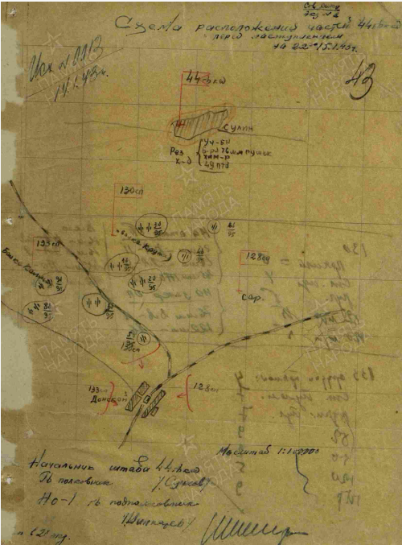

1 января 1943 года советские войска начали Ростовскую наступательную опера-цию, которая была составной частью Северо-Кавказской стратегической наступательной операции войск Юго-Западного, Южного и Закавказского фронтов. Основной целью операции было освобождение Ростова-на-Дону, помимо этого советские войска должны были отрезать пути отхода северо-кавказской группировке немецко-фашистской войск на север. За две недели боев войска Южного фронта с боями продвинулись примерно на 150-200 километров и вышли в излучину Дона и Манычского бассейна. К исходу 23 января войска были на рубеже Северский Донец, Дон, Веселый, Целина. В ходе общего наступления к середине февраля 1943 года от немецко-фашистских захватчиков была освобождена большая часть территории Ростовской области. Именно во время этой операции и произошел вошедший в историю бой у станции Красновка.
С тяжелыми боями, тесня немецкие войска и продвигаясь на запад, советские сол-даты вышли к железнодорожной станции Красновка Ростовской области. Здесь противник успел соорудить высокий вал из соломы и снега, который затем залили водой, создав подобие своеобразной крепости, на верху вала была натянута колючая проволока. Овладеть данным железнодорожным узлом и самой станцией было приказано солдатам 130-го полка 44-й гвардейской стрелковой дивизии. Станция, которая располагалась на железнодорожной ветке Миллерово-Ворошиловград и являлась дорогой стратегического значения, представляла собой огромную ценность и для атакующих, и для обороняющихся. Бойцам 130-го полка был поставлен приказ овладеть участком железной дороги в этом районе, не допустив продвижения немецких эшелонов с солдатами и техникой в сторону Сталинграда.
На рассвете 15 января на штурм рукотворной немецкой крепости пошла рота гвардии лейтенанта Ивана Ликунова. Снежный или лучше сказать ледяной вал оказался достаточно скользким и высоким, бойцам трудно было за что-то зацепиться. Пробираясь на верх, они помогали себе штыками, при этом противник забрасывал атакующих бойцов гранатами, что, однако не остановило отважных гвардейцев. Стоит отметить, что атака проходила также под плотным минометным и пулеметным огнем противника, но и это не помешало советским воинам завладеть валом и выйти на окраину железнодорожного поселка Донской (сегодня хутор Красновка), захватив три дома на окраине данного населенного пункта. Правда, это продвижение далось очень дорогой ценой, до домов смогли добраться лишь 13 бойцов роты гвардии лейтенанта Ликунова.
Прорвавшиеся гвардейцы заняли оборону в трех хатах, отвечая на атаки противника дружным огнем из всего имеющегося у них оружия. Гвардии лейтенант Иван Ликунов с четырьмя бойцами занял крайнюю слева хату, в средней закрепились сержант Николай Севрюков и рядовые Константин Поляков, Тимирай Кубакаев и Николай Сирин. Оборону в крайне справа хате возглавил гвардии младший лейтенант Иван Седов. Несмотря на неоднократные контратаки противника, бойцы удерживали эти позиции в течение дня. Однополчане несколько раз пытались прорваться к ним на выручку, но их останавливал губительный артиллерийский огонь противника.
Как отмечено в наградном листе одного из героев данного боя гвардии красноармейца Ивана Тарасенко, немцы неоднократно предлагали защитникам сдаться, на что те отвечали им: «Гвардейцы в плен не сдаются!», открывая по противнику огонь. За день гитлеровцы несколько раз бросали против горстки смельчаков до роты пехоты с танками, но тем удалось отбиться. В конечном итоге немцам удалось окружить все три хаты, в которых укрылись смельчаки и обложить их соломой. После того как солому подожгли пламя быстро перекинулось на дома, но из горящих хат все равно никто не вышел. Их защитники продолжали вести бой, пока у них не кончились патроны. Когда боеприпасы подошли к концу, часть защитников бросилась в штыковую атаку, пытаясь пробиться сквозь позиции противника к своим. Однако силы были слишком не равны, и все они погибли в этом бою. Когда советские артиллеристы подавили батареи противника и наступающие советские войска все-таки смогли прорваться в поселок станции Красновка, на краю догорали три хаты, вокруг которых насчитали порядка сотни убитых солдат и офицеров противника.
Указом Президиума Верховного Совета СССР от 31 марта 1943 года за проявленные мужество и героизм и образцовое выполнение заданий командования в боях с немецко-фашистскими захватчиками все тринадцать героев Красновки были посмертно представлены к званию Героя Советского Союза и награждены орденами Ленина. Вот имена героев: гвардии лейтенант Ликунов Иван Сергеевич, гвардии младший лейтенант Седов Иван Васильевич, гвардии сержант Васильев Владимир Александрович, гвардии сержант Севрюков Николай Михайлович, гвардии рядовой Курбаев Афанасий Афанасьевич, гвардии рядовой Немировский Николай Николаевич, гвардии рядовой Полухин Иван Андреевич, гвардии рядовой Поляков Константин Илларионович, гвардии рядовой Сирин Николай Иванович, гвардии рядовой Тарасенко Иван Иванович, гвардии рядовой Утягулов Зубай Тухватович.
Все погибшие в этом бою воины были похоронены в одной братской могиле возле железнодорожной станции, которую они штурмовали.